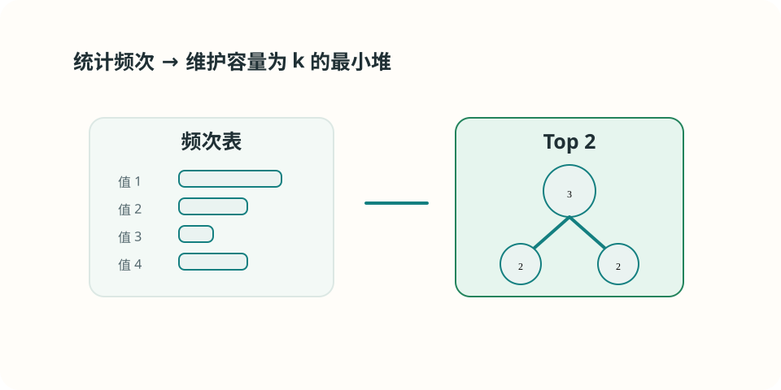
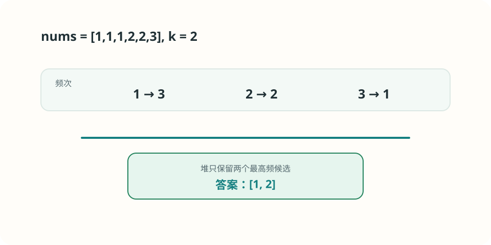
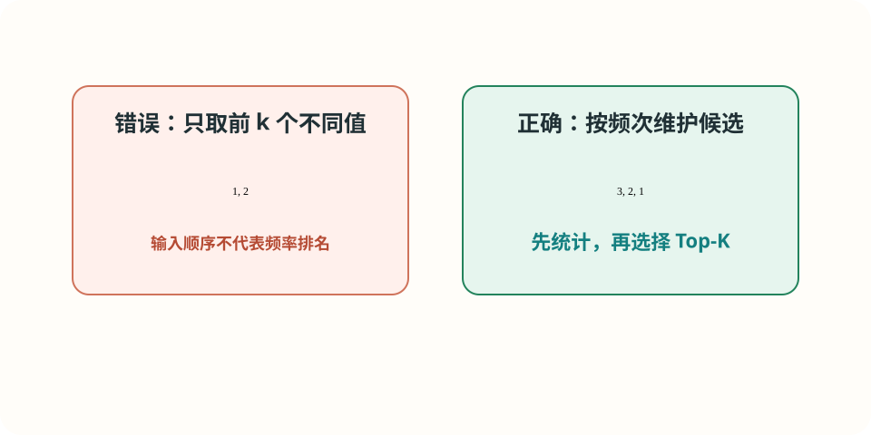

前 K 个高频元素
先统计频次，再用容量为 k 的最小堆保留最强候选。
Mediumheap-top-k可视化题解
01 · 先弄清楚题目要做什么
给定整数数组 nums 和 k，返回出现频率最高的 k 个元素，答案顺序不限且题目保证答案唯一。例：[1,1,1,2,2,3]、k=2，返回 [1,2]。
02 · 从朴素方法出发
对每个不同值重新扫描整个数组计数会重复工作；先统计频次后完整排序，时间 O(u log u)。当 k 较小时，大小为 k 的最小堆只维护当前最强的 k 个候选。
优化不是背模板，而是识别输入中可复用的信息：能否记录已经见过的内容？能否维护一个规模受控的候选集合？能否安全地排除不可能的状态？
03 · 状态与不变量
处理完任意一批不同数字后，堆中至多 k 个元素，且它们是已处理数字中频率最高的 k 个。堆顶是保留候选中频率最低者；新候选更强时，弹出堆顶即可恢复 Top-K 性质。

04 · 交互式关键步骤
以下是标准样例的确定性关键帧，不是对任意输入的在线执行。图形、步骤说明和不变量来自同一份快照数据。

统计频次
1 → 3，2 → 2，3 → 1。
每个不同数字只统计一次。
当前第 1 步：统计频次
05 · 为什么算法正确
按已处理的不同数字数量归纳。堆不足 k 时加入新元素；堆满后，若新频次不高于堆顶，它不可能进入当前 Top-K；若更高，替换堆顶后仍保留已处理元素中频率最高的 k 个。遍历完成后堆即为全局 Top-K。
正确性来自状态不变量：每次更新都保持它，终止时它恰好推出题目要求的结果。
06 · Python 参考实现
实现与上面的状态定义及证明一一对应。
from collections import Counter
import heapq
class Solution:
def topKFrequent(self, nums: list[int], k: int) -> list[int]:
counts = Counter(nums)
heap = []
for value, frequency in counts.items():
heapq.heappush(heap, (frequency, value))
if len(heap) > k:
heapq.heappop(heap)
return [value for frequency, value in heap]复杂度分析
设 n 为数组长度，u 为不同数字数。计数期望 O(n)，堆维护 O(u log k)，总时间 O(n+u log k)。频次表 O(u)，堆 O(k)，辅助空间 O(u+k)。
07 · 反例与边界检查
不能取 Counter.items() 的前 k 项，因为输入出现顺序不等于频率排名。堆顶必须是当前保留候选中频率最低者，堆大小超过 k 时弹出堆顶。

自测清单
- 最小输入、空输入（若允许）是否正确？
- 重复值、边界值或退化结构是否仍满足不变量？
- 每一次状态更新是否能在证明中找到依据？